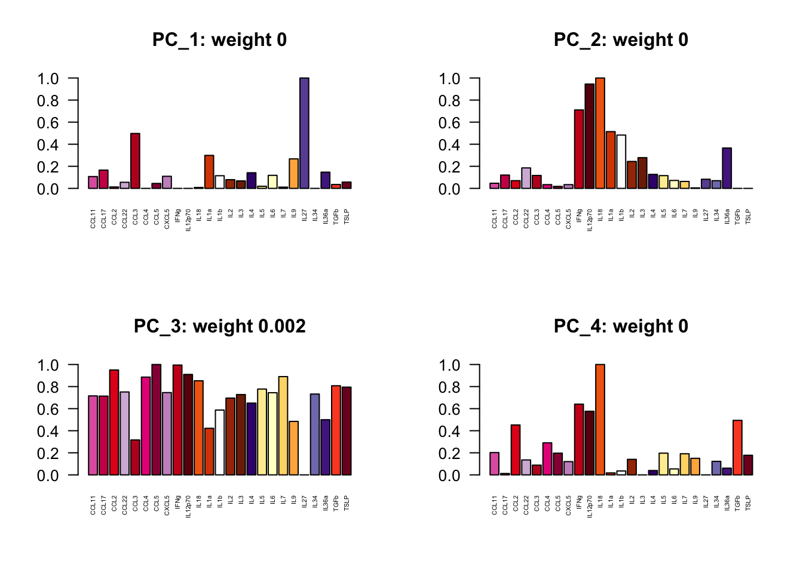
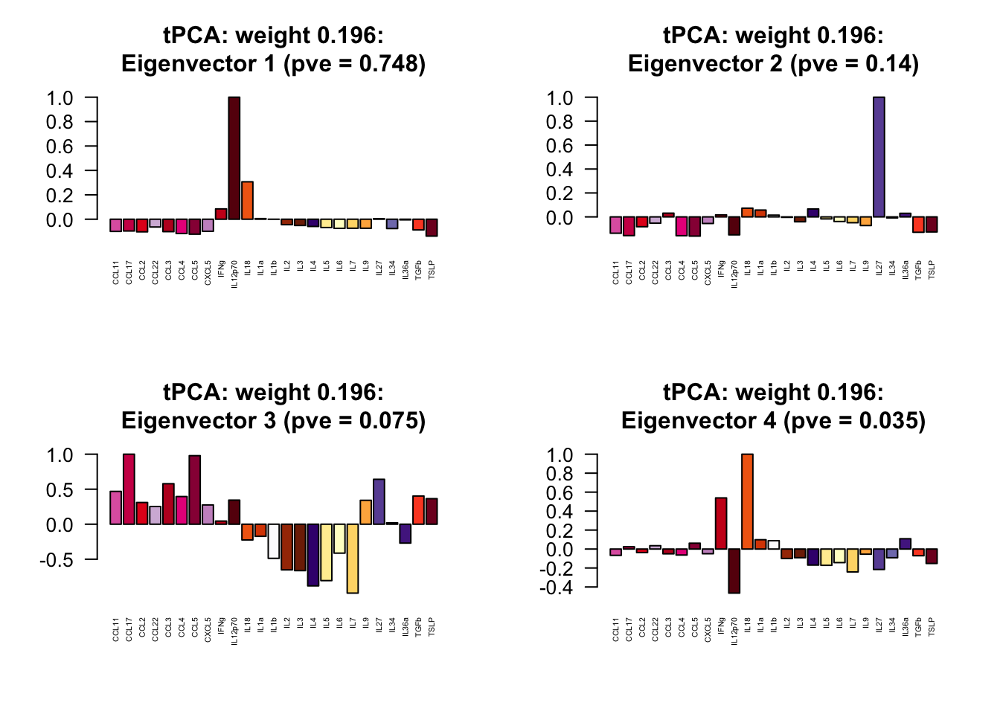

Last updated: 2020-11-05
Checks: 7 0
Knit directory: poisson_mash_random_effects/
This reproducible R Markdown analysis was created with workflowr (version 1.6.2). The Checks tab describes the reproducibility checks that were applied when the results were created. The Past versions tab lists the development history.
Great! Since the R Markdown file has been committed to the Git repository, you know the exact version of the code that produced these results.
Great job! The global environment was empty. Objects defined in the global environment can affect the analysis in your R Markdown file in unknown ways. For reproduciblity it’s best to always run the code in an empty environment.
The command set.seed(20201102) was run prior to running the code in the R Markdown file. Setting a seed ensures that any results that rely on randomness, e.g. subsampling or permutations, are reproducible.
Great job! Recording the operating system, R version, and package versions is critical for reproducibility.
Nice! There were no cached chunks for this analysis, so you can be confident that you successfully produced the results during this run.
Great job! Using relative paths to the files within your workflowr project makes it easier to run your code on other machines.
Great! You are using Git for version control. Tracking code development and connecting the code version to the results is critical for reproducibility.
The results in this page were generated with repository version f620553. See the Past versions tab to see a history of the changes made to the R Markdown and HTML files.
Note that you need to be careful to ensure that all relevant files for the analysis have been committed to Git prior to generating the results (you can use wflow_publish or wflow_git_commit). workflowr only checks the R Markdown file, but you know if there are other scripts or data files that it depends on. Below is the status of the Git repository when the results were generated:
Ignored files:
Ignored: .DS_Store
Ignored: .Rhistory
Ignored: output/.DS_Store
Ignored: output/Ly6C-/.DS_Store
Untracked files:
Untracked: output/B_cells/
Untracked: output/Ly6C-/condition_colors.Rds
Untracked: output/Ly6C-/sim_null/ed_rep_3.Rds
Untracked: output/Ly6C-/sim_null/pois_mash_fit_rep_3.Rds
Untracked: output/Ly6C-/sim_null/pois_mash_posterior_rep_3.Rds
Untracked: output/Ly6C-/sim_null/raw_data3.Rds
Note that any generated files, e.g. HTML, png, CSS, etc., are not included in this status report because it is ok for generated content to have uncommitted changes.
These are the previous versions of the repository in which changes were made to the R Markdown (analysis/application_B_cells.Rmd) and HTML (docs/application_B_cells.html) files. If you’ve configured a remote Git repository (see ?wflow_git_remote), click on the hyperlinks in the table below to view the files as they were in that past version.
| File | Version | Author | Date | Message |
|---|---|---|---|---|
| Rmd | f620553 | yushaliu | 2020-11-05 | upload constrained estimation of rank-1 covariances |
We apply poisson mash and mash to a subset of the single cell cytokines dataset, which include gene expresion data of \(15,705\) B cells from \(R=25\) conditions (i.e., different cytokine treatments) in the second batch. We apply both methods to the \(9,968\) genes with at least \(50\) reads across all cells.
cols.trt <- readRDS("output/B_cells/condition_colors.Rds")
trts <- names(cols.trt)We apply poisson mash to the \(9,968 \times 25\) count data matrix \(X\), where \(X_{jr}\) represents the total counts of gene \(j\) in all cells from condition \(r\). To estimate the data-driven prior covariances \(U_k\), we fit the poisson mash model without scaling parameters \(w_l\) to a subset of genes (\(\tilde{J} = 1,964\)) that are differentially expressed across conditions, which are identified based on a conditional multinomial goodness-of-fit test. Two versions of ED step are fitted, depending on whether we restrict the vectors \(u_g\) forming the rank-1 data-driven prior covariances \(U_g = u_g u_g'\) to have the same sign across conditions or not.
## load in the ED results
pois.ed <- readRDS("output/B_cells/pois_ed_orig1.Rds")
pois.ed.v2 <- readRDS("output/B_cells/pois_ed_orig1_constrained.Rds")
## running time per iteration in ED
pois.ed$runtime/length(pois.ed$ELBO) user system elapsed
18.803146 0.026703 18.830324 pois.ed.v2$runtime/length(pois.ed.v2$ELBO) user system elapsed
19.468241 0.029906 19.508591 ## look at the ELBO
plot(pois.ed$ELBO, xlab = "niter", ylab = "elbo", main="Fitting ED step in Poisson mash")
lines(pois.ed.v2$ELBO, col="red", lty=4)
legend("bottomright", legend=c("unconstrained", "constrained"), text.col=c("black", "red"),
col=c("black", "red"), lty=c(1,4), bty="n")## load in the poisson mash fit results
pois.res <- readRDS("output/B_cells/pois_mash_fit_orig1.Rds")
pois.res.v2 <- readRDS("output/B_cells/pois_mash_fit_orig1_constrained.Rds")
## running time for fitting poisson mash to all genes
pois.res$runtime user system elapsed
27470.142 88.328 27556.692 pois.res.v2$runtime user system elapsed
29903.938 149.299 30069.982 ## look at ELBO
plot(pois.res$ELBO, xlab = "niter", ylab = "elbo", main="Fitting Poisson mash to all genes")
lines(pois.res.v2$ELBO, col="red", lty=4)
legend("bottomright", legend=c("unconstrained", "constrained"), text.col=c("black", "red"),
col=c("black", "red"), lty=c(1,4), bty="n")## compute the weights of different prior covariances
wlist <- c(1e-4, 1e-3, 2.5e-3, 5e-3, 1e-2, 2e-2, 4e-2, 8e-2, 0.16, 0.32, 0.64, 1, 2, 4, 8, 16, 25, 36)
pi.mat <- matrix(pois.res$pi, ncol=length(wlist), byrow=TRUE)
rownames(pi.mat) <- c(names(pois.ed$Ulist), paste0("e_", 1:25), names(pois.ed$ulist))
colnames(pi.mat) <- paste0("w=", wlist)
pi.mat.v2 <- matrix(pois.res.v2$pi, ncol=length(wlist), byrow=TRUE)
rownames(pi.mat.v2) <- c(names(pois.ed.v2$Ulist), paste0("e_", 1:25), names(pois.ed.v2$ulist))
colnames(pi.mat.v2) <- paste0("w=", wlist)### Estimate of eigenvectors of the data-driven covariance initialized by rank-5 PCA
eig.tPCA <- eigen(pois.ed$Ulist[[1]])
pve.tPCA <- eig.tPCA$values/sum(eig.tPCA$values)
par(mfrow=c(2,2))
for (k in 1:4){
v <- eig.tPCA$vectors[,k]
barplot(v/v[which.max(abs(v))], names = names(cols.trt), cex.names = 0.4, las = 2, col = cols.trt,
main = paste0(names(pois.ed$Ulist)[1], ": weight ", round(rowSums(pi.mat)[1],3),
":\nEigenvector ", k, " (pve = ", round(pve.tPCA[k],3), ")"))
}### Estimate of eigenvectors of rank-1 data-driven covariance matrices
for (k in 1:4){
v <- as.numeric(pois.ed$ulist[[k]])
barplot(v/v[which.max(abs(v))], names = names(cols.trt), cex.names = 0.4, las = 2, col = cols.trt,
main = paste0(names(pois.ed$ulist)[k], ": weight ", round(rowSums(pi.mat)[27+k],3)))
}### Estimate of eigenvectors of the data-driven covariance initialized by rank-5 PCA
eig.tPCA <- eigen(pois.ed.v2$Ulist[[1]])
pve.tPCA <- eig.tPCA$values/sum(eig.tPCA$values)
par(mfrow=c(2,2))
for (k in 1:4){
v <- eig.tPCA$vectors[,k]
barplot(v/v[which.max(abs(v))], names = names(cols.trt), cex.names = 0.4, las = 2, col = cols.trt,
main = paste0(names(pois.ed.v2$Ulist)[1], ": weight ", round(rowSums(pi.mat.v2)[1],3),
":\nEigenvector ", k, " (pve = ", round(pve.tPCA[k],3), ")"))
}### Estimate of eigenvectors of rank-1 data-driven covariance matrices
for (k in 1:4){
v <- as.numeric(pois.ed.v2$ulist[[k]])
barplot(v/v[which.max(abs(v))], names = names(cols.trt), cex.names = 0.4, las = 2, col = cols.trt,
main = paste0(names(pois.ed.v2$ulist)[k], ": weight ", round(rowSums(pi.mat.v2)[27+k],3)))
}
We then fit mash with gene-specific means and random effects to the \(9,968 \times 25\) matrix of point estimates and standard errors, which are calculated from the normalized single cell data. To estimate the data-driven prior covariances \(U_k\), we fit mash without scaling parameters \(w_l\) to a subset of genes (\(\tilde{J} = 1,544\)) that are differentially expressed across conditions, which are defined here as genes for which \(\max_r |Z_{jr}| \geq 3.5\). Two versions of ED step are fitted, depending on whether we restrict the vectors \(u_g\) forming the rank-1 data-driven prior covariances \(U_g = u_g u_g'\) to have the same sign across conditions or not.
## load in the ED results
mash.ed <- readRDS("output/B_cells/mash_ed_orig1.Rds")
mash.ed.v2 <- readRDS("output/B_cells/mash_ed_orig1_constrained.Rds")
## running time per iteration in ED
mash.ed$runtime/length(mash.ed$llik) user system elapsed
7.896116 0.012108 7.910904 mash.ed.v2$runtime/length(mash.ed.v2$llik) user system elapsed
9.460506 0.017562 9.485494 ## look at the log likelihood
plot(mash.ed$llik, xlab = "niter", ylab = "log likelihood", main="Fitting ED step in mash with random effects")
lines(mash.ed.v2$llik, col="red", lty=4)
legend("bottomright", legend=c("unconstrained", "constrained"), text.col=c("black", "red"),
col=c("black", "red"), lty=c(1,4), bty="n")## load in the mash fit results
mash.res <- readRDS("output/B_cells/mash_fit_orig1.Rds")
mash.res.v2 <- readRDS("output/B_cells/mash_fit_orig1_constrained.Rds")
## running time for fitting poisson mash to all genes
mash.res$runtime user system elapsed
10975.746 83.268 11057.428 mash.res.v2$runtime user system elapsed
12981.151 114.546 13106.680 ## look at the log likelihood
plot(mash.res$llik, xlab = "niter", ylab = "log likelihood", main="Fitting mash with random effects to all genes")
lines(mash.res.v2$llik, col="red", lty=4)
legend("bottomright", legend=c("unconstrained", "constrained"), text.col=c("black", "red"),
col=c("black", "red"), lty=c(1,4), bty="n")## compute the weights of different prior covariances
wlist <- c(1e-6, 4e-6, 1e-5, 4e-5, 1e-4, 2.5e-4, 5e-4, 1e-3, 2.5e-3, 5e-3, 1e-2, 2e-2, 4e-2, 8e-2, 0.16, 0.32)
pi.mat <- matrix(mash.res$pi, ncol=length(wlist), byrow=TRUE)
rownames(pi.mat) <- c(names(mash.ed$Ulist), paste0("e_", 1:25), names(mash.ed$ulist))
colnames(pi.mat) <- paste0("w=", wlist)
pi.mat.v2 <- matrix(mash.res.v2$pi, ncol=length(wlist), byrow=TRUE)
rownames(pi.mat.v2) <- c(names(mash.ed.v2$Ulist), paste0("e_", 1:25), names(mash.ed.v2$ulist))
colnames(pi.mat.v2) <- paste0("w=", wlist)### Estimate of eigenvectors of the data-driven covariance initialized by rank-5 PCA
eig.tPCA <- eigen(mash.ed$Ulist[[1]])
pve.tPCA <- eig.tPCA$values/sum(eig.tPCA$values)
par(mfrow=c(2,2))
for (k in 1:4){
v <- eig.tPCA$vectors[,k]
barplot(v/v[which.max(abs(v))], names = names(cols.trt), cex.names = 0.4, las = 2, col = cols.trt,
main = paste0(names(mash.ed$Ulist)[1], ": weight ", round(rowSums(pi.mat)[1],3),
":\nEigenvector ", k, " (pve = ", round(pve.tPCA[k],3), ")"))
}### Estimate of eigenvectors of rank-1 data-driven covariance matrices
for (k in 1:4){
v <- as.numeric(mash.ed$ulist[[k]])
barplot(v/v[which.max(abs(v))], names = names(cols.trt), cex.names = 0.4, las = 2, col = cols.trt,
main = paste0(names(mash.ed$ulist)[k], ": weight ", round(rowSums(pi.mat)[27+k],3)))
}### Estimate of eigenvectors of the data-driven covariance initialized by rank-5 PCA
eig.tPCA <- eigen(mash.ed.v2$Ulist[[1]])
pve.tPCA <- eig.tPCA$values/sum(eig.tPCA$values)
par(mfrow=c(2,2))
for (k in 1:4){
v <- eig.tPCA$vectors[,k]
barplot(v/v[which.max(abs(v))], names = names(cols.trt), cex.names = 0.4, las = 2, col = cols.trt,
main = paste0(names(mash.ed.v2$Ulist)[1], ": weight ", round(rowSums(pi.mat.v2)[1],3),
":\nEigenvector ", k, " (pve = ", round(pve.tPCA[k],3), ")"))
}
### Estimate of eigenvectors of rank-1 data-driven covariance matrices
for (k in 1:4){
v <- as.numeric(mash.ed.v2$ulist[[k]])
barplot(v/v[which.max(abs(v))], names = names(cols.trt), cex.names = 0.4, las = 2, col = cols.trt,
main = paste0(names(mash.ed.v2$ulist)[k], ": weight ", round(rowSums(pi.mat.v2)[27+k],3)))
}
sessionInfo()R version 3.6.2 (2019-12-12)
Platform: x86_64-apple-darwin15.6.0 (64-bit)
Running under: macOS Catalina 10.15.7
Matrix products: default
BLAS: /Library/Frameworks/R.framework/Versions/3.6/Resources/lib/libRblas.0.dylib
LAPACK: /Library/Frameworks/R.framework/Versions/3.6/Resources/lib/libRlapack.dylib
locale:
[1] en_US.UTF-8/en_US.UTF-8/en_US.UTF-8/C/en_US.UTF-8/en_US.UTF-8
attached base packages:
[1] stats graphics grDevices utils datasets methods base
other attached packages:
[1] workflowr_1.6.2
loaded via a namespace (and not attached):
[1] Rcpp_1.0.4.6 rprojroot_1.3-2 digest_0.6.25 later_1.0.0
[5] R6_2.4.1 backports_1.1.7 git2r_0.27.1 magrittr_1.5
[9] evaluate_0.14 stringi_1.4.6 rlang_0.4.7 fs_1.4.1
[13] promises_1.1.0 whisker_0.4 rmarkdown_2.3 tools_3.6.2
[17] stringr_1.4.0 glue_1.4.1 httpuv_1.5.2 xfun_0.17
[21] yaml_2.2.1 compiler_3.6.2 htmltools_0.4.0 knitr_1.30